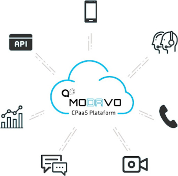

Plataforma De Comunicação Como Serviço (CPaaS)
É uma solução de software de comunicação que atua como uma base sobre a qual desenvolvedores podem integrar uma variedade de aplicativos. Métodos de comunicação típicos, como voz, chamadas de vídeo ou mensagens de texto SMS, podem ser incorporados em outros sistemas por meio de APIs que se conectam à plataforma CPaaS. Essas APIs permitem que as empresas expandam suas ofertas sem a necessidade de hardware ou software adicional.
O CPaaS, com sua escalabilidade, flexibilidade, autenticação e segurança aprimoradas, está revolucionando o modo como as empresas habilitadas em nuvem implementam comunicações de voz, SMS e vídeo.

2FA Autenticação de dois fatores
O 2FA é um procedimento de segurança que garante que serão necessários 2 fatores únicos para liberação de uma ação. O primeiro fator é a senha que o usuário e o segundo pode ser autenticado via token, via detecção de impressão digital, reconhecimento facial, código enviado via sms, entre outros.
Google Chamadas verificadas.
Esse novo recurso do Google, exclusivo para telefones Android, permite que empresas exibam para o cliente na hora da chamada sua marca, logotipo e até mesmo o motivo da chamada.
A Telecall é a primeira operadora de telecom no Brasil a oferecer esse recurso do Google.


Número máscara Proteja identidades profissionais
Garanta aos seus clientes a capacidade de fazer chamadas e enviar mensagens sem expor seus números de telefone pessoas
- Mascare um número de telefone para interações com mais privacidade
- Permite que empresas façam negócios usando menos números de telefone.
- Oferece uma experiência mais segura e profissional.
SMS Programável Conecte-se com seus clientes
É muito provável que você já tenha recebido uma mensagem de texto de uma empresa ou organização. Com uma API, qualquer empresa pode enviar mensagens de texto e impactar clientes, prospects ou fornecedores como parte de seu processo comercial. Com essa ferramenta você envia mensagens de SMS com as informações que o seu cliente precisa a velocidade e a confiabilidade que você espera.